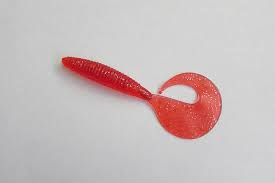
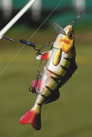
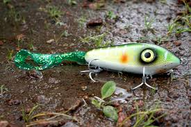
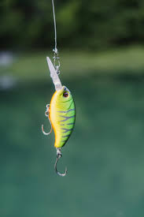

If you are using some sort of bottem bait you should slowly pop it off the bottem hoping for a hunger bite if you dont git a bite slowly reel alsow works.

From: PxHereHard moving baits are jointed lures that you reel in at a steady paist this is my favriot way to catch a bass it should replacat a fish or ingured bait fish.

From: PxHerethis is bascilly a hard moving bait but soft you will work it the same way and it trigers bites fast.This will be a cheaper option then a hard moving bait becasue its is less expensive matirels.

From: PxHereThis is a very fun bite they feel like they ether they get stuck or just it runs with it.They will crush this as a reaction bites.

From: Pexels